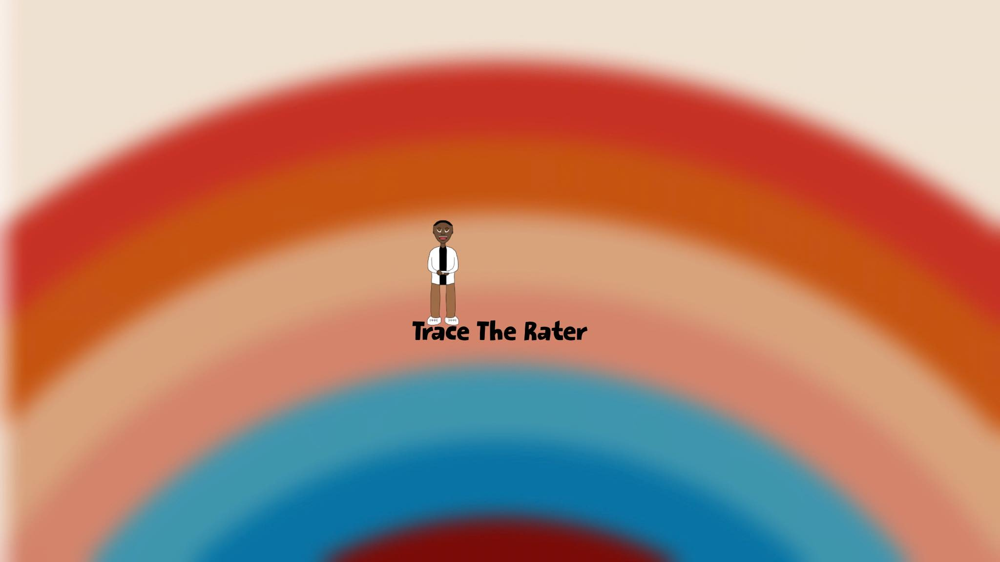
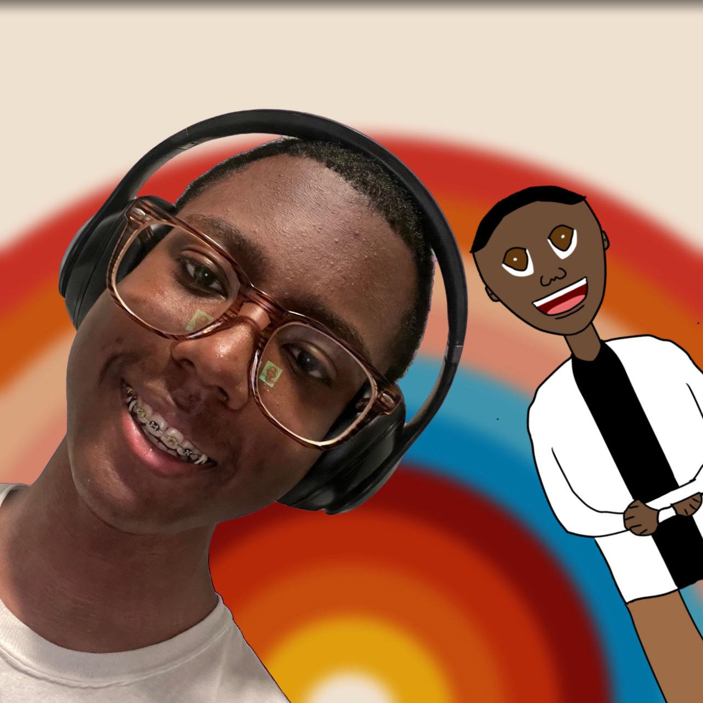
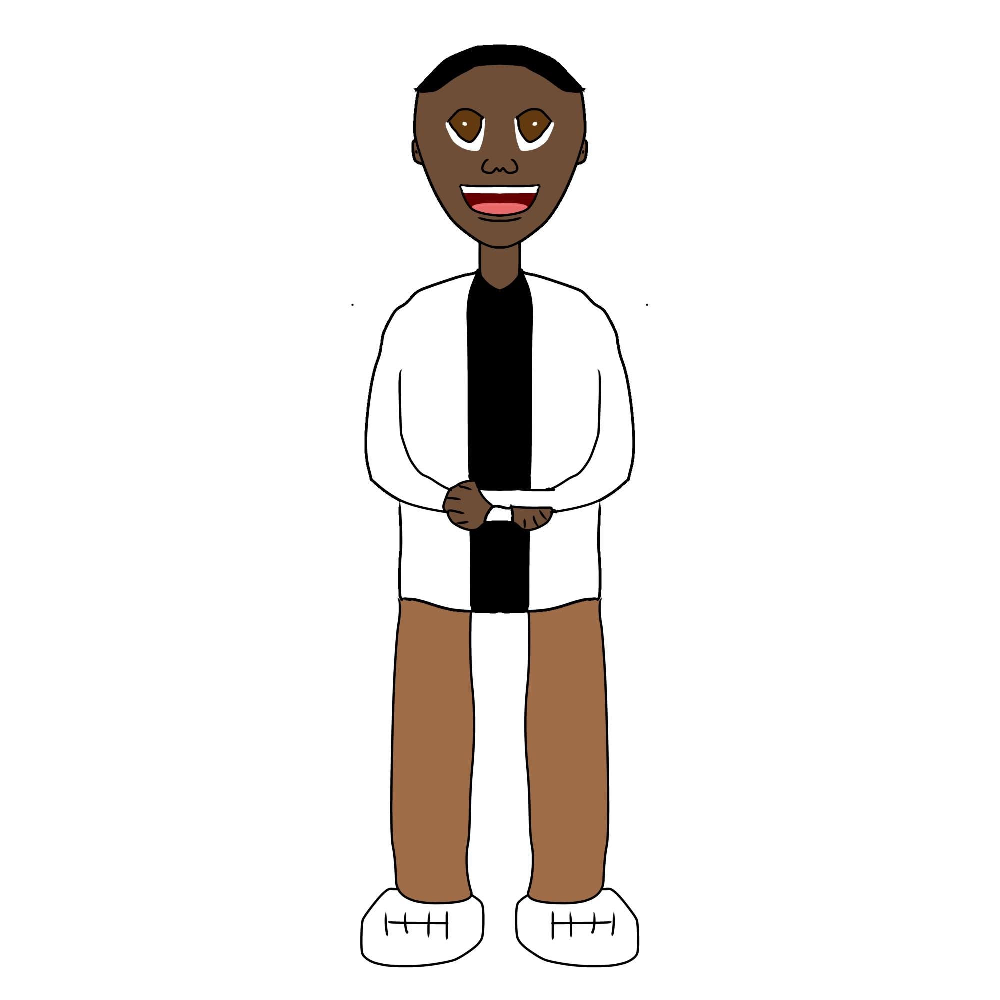
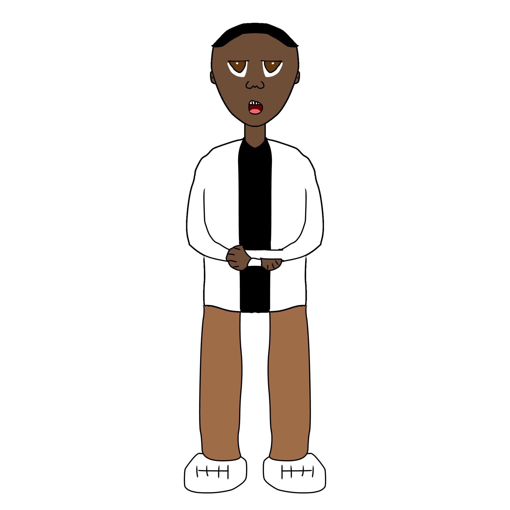

Check this out! My YouTube review is live!
Watch → youtube.com/@tracetherater
Meet Trace — Real + CartoonCheck this out! Under pillow + covers at night, phone chill, building portfolio. White with black stripe, brown pants, white sneakers.

Pitch Energy
Setback EnergyCheck this out! All my links:
Check this out! Usually every night when I try to go to sleep, I get up from under my pillow and covers and grab my phone to do some chill stuff. Just like LS Mark and MAFDOMiNUS made concepts with story-driven videos, I've had thoughts of creating my own. Diney is married to Alyssa Suzuki-Puppet and gave birth to 5 Wasian children, Lemey Puppet is married to Amy Suzuki-Puppet, 2 Wasian children. Zachary Suzuki is one of Lemey and Amy's two children who develops a relationship with a French girl named Sadianna “Sadie” Bellefleur. They then get cloned with Christopher Bellefleur being the racial flip of Zachary and gender flip of Sadie, and Emmaline Suzuki being the racial flip of Sadie and gender flip of Zachary. The show starts off with Trace showing up to meet with the manager of one of the local media station in his hometown, but the manager says that he will only recruit Trace if he builds his portfolio. I then head home and start my business plan!
Check this out! Full Portfoliana page →
Check this out! Wichita Media Outreach Templates → • Episode Beats & Local Interviews →